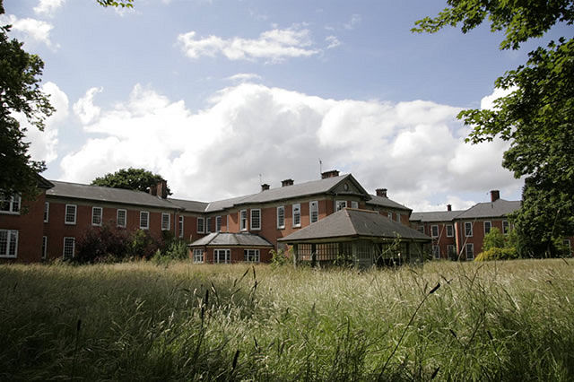

|
JANUARY The
1st Canadian Heavy Battery, Charles's unit, spends the month
of January in Bonn. It carries out its usual fatigues and
its duties as an army of occupation.
As for Charles, on leave
from January 10 to 22, he takes a trip to England.
|
The war diary of
Charles's artillery unit ends at the end of January
1919.
With the war over,
all the soldiers are now attached to the C.A.R.D. (the Canadian
reserve corps).
To keep following
Charles until his demobilization, all we have left
are his personnel file and a few
postcards he sent to his fiancée. |
In fact, the Canadians were unhappy occupiers. The soldiers
longed to be back with their families. The Canadian troops left
Germany for Belgium in February 1919, but it would take
several more months to demobilize all the soldiers still in Europe.
FEBRUARY
From a series of three postcards
sent to his fiancée, we know that on
February 19 Charles is in Namur, Belgium, for a few days,
and that he
is bored and lonely there. He writes: " I hope
these cards find you in very good health, as I am
myself. I hope to hear from you soon; your news
will ease my blues, because I am terribly lonesome."
CHARLES'S FIFTH
HOSPITAL STAY
A few days later Charles starts
coming down with flu. On February 25 he is hospitalized with a 102 °F
fever and a bad sore throat.
ON FEBRUARY 28, 1919, CHARLES TURNS 26.
MARCH
On March 3 he sends a
postcard to Ézilda telling her that he is in a
hospital in France, and asking her not to worry. In
fact, he is at No. 32 Stationary Canadian Hospital at Winereux,
a small town near Boulogne-sur-Mer. He is
officially diagnosed with influenza (the
Spanish flu).

The course of the Spanish flu, or
influenza A (H1N1), during the Great War.
It shows a peak in the winter of 1919, when
Charles was ill.
On March 7 Charles is transferred by
hospital ship, the H.S. Jan Buydel, to England. The
next day he is admitted to No. 4 General Canadian Hospital
at Basingstoke, in Hampshire, some fifty
miles south of London.
On the day Charles is admitted,
the hospital is treating 1,466 patients. This military hospital is
in fact the Park Prewett Asylum, (photo
below) a brand-new building
requisitioned by the War Office in 1917 and handed over to the
Canadian authorities, who fitted it out
for 1,040 beds. But in this month of March the number of
patients reaches 1,569. Not to mention the medical staff,
who are infected with influenza too.

Charles's health improves
slowly. He is very tired after several sleepless
nights, coughing so hard that his ribs ache. The doctor
notes in his report of March 20 that Charles seems very
nervous; Charles told him he had "never felt like this before".
A blood sample is taken.
APRIL
At the medical report of April
5, Charles is better and shows few signs of
nervousness. On April 14 Charles is discharged
from hospital. The next day he leaves by bus for Ripon, in Yorkshire, two hundred miles north of
London. Charles gets there on April 18, Good Friday. It
snows for several days. It is a transit camp where thousands
of Canadian servicemen wait their turn to be shipped home
to Canada. Since the start of the month the authorities have had to
add tents, the camp is so overcrowded.
These camps are real powder kegs, with all these
idle soldiers wanting only one thing: to go home, find
work there and earn their country's gratitude for all
their sacrifices.
The soldiers are sent home
gradually,
as resources allow.

On April 28 Charles has a full medical examination, and on May
5 a dental examination. All these medical reports are essential in
preparing the soldiers' demobilization.
MAY
Charles's turn comes on
May 10. That day six hundred and fifty soldiers, Charles among them, are transferred
to Kinmel Camp at Rhyl. This camp is on the west coast,
in Wales. Bloody riots had broken out there
a few weeks earlier, and soldiers had lost their lives.
The affair was hushed up by the British authorities, and
the witnesses scattered. (ref.: Going Home
(Soldats en transit), a Canadian film by Terry Ryan, 1987)
 Charles
finally sails from Liverpool on May 14, 1919. He
lands at Halifax on May 24. Two days later he
is in Quebec City, where he is officially demobilized. He
signs his "discharge", which cuts all ties
with the Canadian army. He is given his "discharge
certificate", which will let him prove his veteran's
status for the rest of his
life. Charles gives as his
address 74 St-Germain, Québec, the address of his
sister Crescence, whom he is surely very happy to see
again, along with his young brother Antoine. Charles
finally sails from Liverpool on May 14, 1919. He
lands at Halifax on May 24. Two days later he
is in Quebec City, where he is officially demobilized. He
signs his "discharge", which cuts all ties
with the Canadian army. He is given his "discharge
certificate", which will let him prove his veteran's
status for the rest of his
life. Charles gives as his
address 74 St-Germain, Québec, the address of his
sister Crescence, whom he is surely very happy to see
again, along with his young brother Antoine.
In 1914, Charles had left
Crescence the mother of a three-year-old son and pregnant. Now he finds her
also the mother of two little girls and pregnant once more.
She gives birth to a son on the following June 8. Charles and his
fiancée Ézilda are the godparents.
 Then
Charles (photo opposite)
moves to Montreal. He looks for work there and plans his
wedding for July 28. Charles withdraws, in instalments, the
balance of his military bank account (a
total of $755). He then gives
as his reference Ézilda's address, 580 Bourbonnière.
In fact this is the home of his future mother-in-law, a widow living there
with her unmarried children. I assume that after their wedding the couple
lived for a few years with Ézilda's family, because
there is no trace of the couple in the Lovell directories
before 1925. Living together like this
had long been common, and remained so even after the Second
World War, since young couples lacked the means. Then
Charles (photo opposite)
moves to Montreal. He looks for work there and plans his
wedding for July 28. Charles withdraws, in instalments, the
balance of his military bank account (a
total of $755). He then gives
as his reference Ézilda's address, 580 Bourbonnière.
In fact this is the home of his future mother-in-law, a widow living there
with her unmarried children. I assume that after their wedding the couple
lived for a few years with Ézilda's family, because
there is no trace of the couple in the Lovell directories
before 1925. Living together like this
had long been common, and remained so even after the Second
World War, since young couples lacked the means.
To learn what
became of Charles and Ézilda,
visit the site devoted to the Consigny
.

|